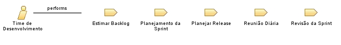

| Role: Time de Desenvolvimento |
 |
|
Relationships
 |
||
| Primary Performs | ||
|---|---|---|
| Modifies |
|
|
Main Description
| A equipe de desenvolvimento é responsável pela entrega do produto. A equipe é tipicamente composta de 5-9 pessoas com habilidades multifuncionais que fazem o trabalho real (analisar, projetar, desenvolver, testar técnicas de comunicação, documentos, etc.) Recomenda-se que a equipe seja auto-organizada e auto-conduzida, mas que muitas vezes trabalhem com alguma forma de projeto ou gestão de equipe. |